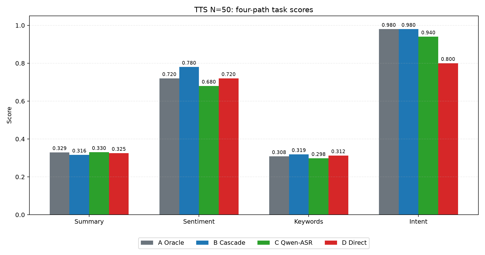
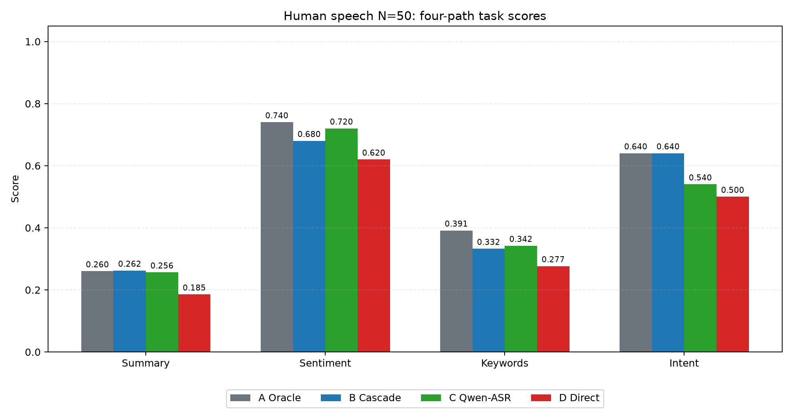
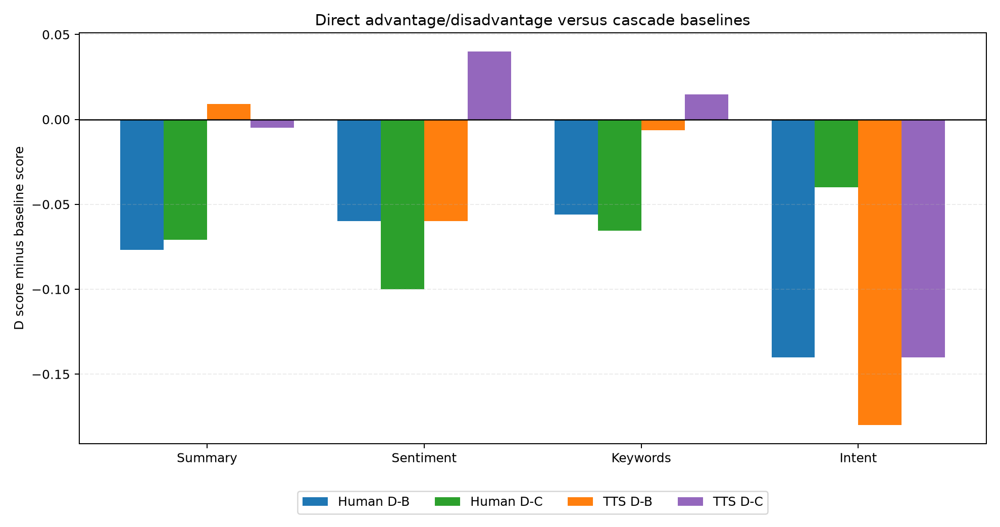
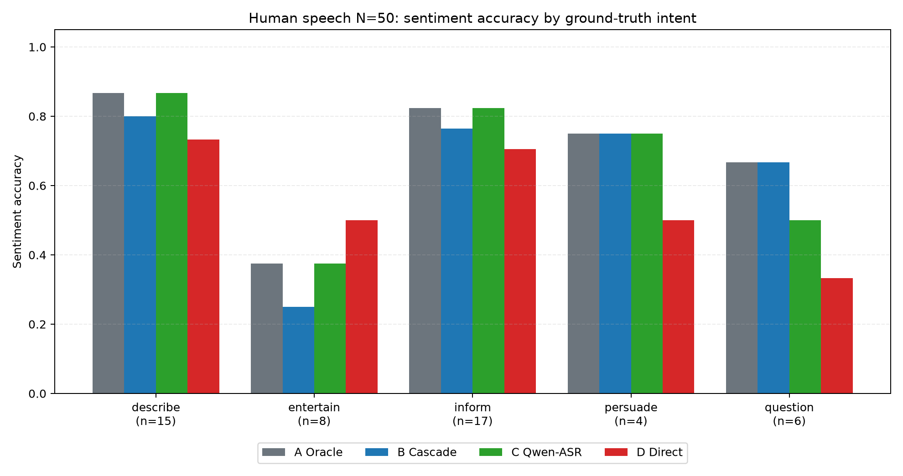
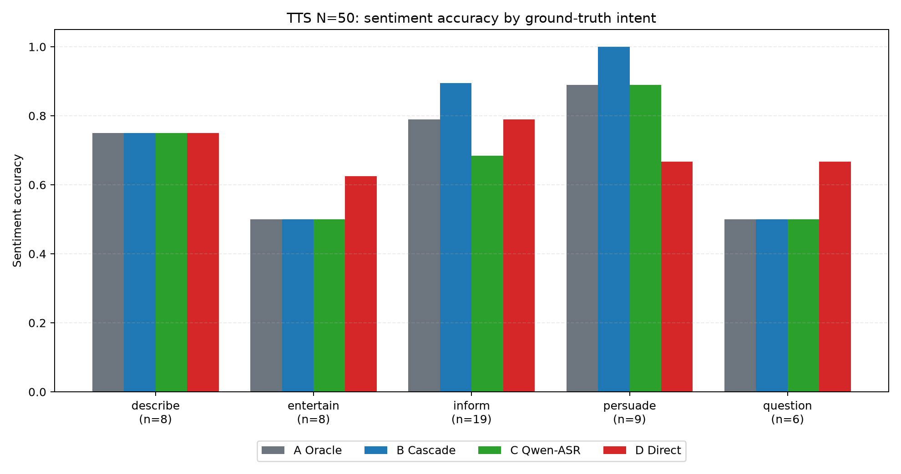
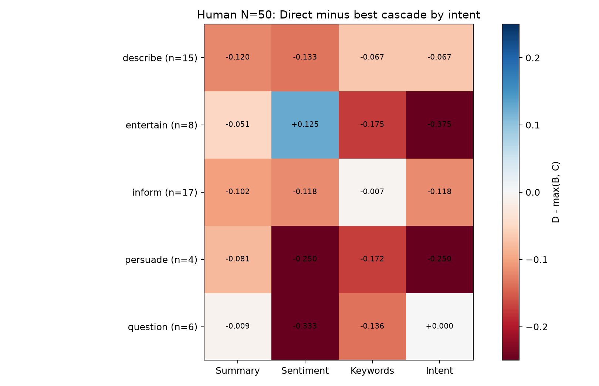
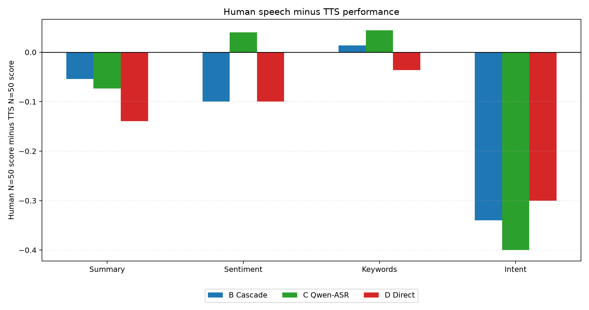

Cascade vs End-to-End Speech Understanding
A bilingual dual-study benchmark with N=50 TTS speech and N=50 real-human speech.
级联式与端到端语音理解：N=50 TTS 与 N=50 真实人声双实验基准。
1. Abstract / 摘要
English
This report compares cascade speech understanding, where audio is first transcribed and then analyzed by a text LLM, with end-to-end audio understanding, where Qwen2-Audio analyzes the waveform directly before structured post-processing. The comparison uses two equally sized benchmarks: 50 controlled TTS clips and 50 noisy real-human clips.
The central conclusion is clear: cascade paths remain stronger for general semantic tasks, especially intent and keyword extraction. Direct understanding is not a universal winner, but it shows a meaningful local advantage in entertainment-style human speech sentiment, where delivery and tone carry information that transcripts can lose.
中文
本报告比较两类语音理解架构：级联式路径先把音频转写成文本，再交给文本大模型分析；端到端路径则由 Qwen2-Audio 直接听音频，再做结构化整理。实验采用两个等规模数据集：50 条受控 TTS 音频和 50 条带真实噪声、观众声、录音差异的人声音频。
核心结论很明确：级联路径在通用语义任务上仍然更强，尤其是意图识别和关键词提取。Direct 不是整体最优，但在“娱乐/脱口秀/表演性人声”的情感判断中出现了局部优势，因为语气、停顿、讽刺和现场反应可能不会完整保留在转写文本里。
2. Main findings / 核心发现
Cascade is the strongest default / 级联是当前最稳的通用路径
TTS: B reaches 78.0% sentiment and 98.0% intent. Human speech: B reaches 68.0% sentiment and 64.0% intent, and has the best human summarization score.
在 TTS 中，B 的情感准确率为 78.0%，意图准确率为 98.0%；在人声中，B 的摘要得分最高，情感和意图也保持较稳。
Direct has a narrow but real signal / Direct 优势窄，但不是没有
On human entertain sentiment, D reaches 50.0%, while B reaches 25.0% and C reaches 37.5%. This is the clearest place where audio-native understanding helps.
在人声 entertain 子集的情感任务中，D 为 50.0%，B 为 25.0%，C 为 37.5%。这是 Direct 最清楚的局部优势。
Oracle separates transcript quality from reasoning / Oracle 用来拆分误差来源
Oracle is not an architecture for raw audio; it is a control path. Its role is to show how much of the error comes from transcription rather than downstream reasoning.
Oracle 不是音频处理方案，而是控制组。它帮助判断错误到底来自转写阶段，还是来自后续文本推理阶段。
TTS overstates real-world ease / TTS 会低估真实人声难度
From TTS to human speech, B sentiment drops by 10 pp and B intent drops by 34 pp. D summarization drops from 0.325 to 0.185.
从 TTS 到真实人声，B 的情感下降 10 个百分点，意图下降 34 个百分点；D 的摘要 ROUGE-L 从 0.325 降到 0.185。
3. Methods / 实验方法
English
All four paths are evaluated on the same four tasks: summarization, sentiment classification, keyword extraction, and intent classification. A/B/C share the same DeepSeek text reasoning stage; only the transcript source differs. D uses Qwen2-Audio direct audio analysis followed by DeepSeek formatting for structured outputs.
中文
四条路径都在同样四项任务上评估：摘要、情感分类、关键词提取、意图分类。A/B/C 使用同一套 DeepSeek 文本推理流程，只改变输入文本来源；D 先由 Qwen2-Audio 直接理解音频，再由 DeepSeek 做结构化整理。
| Path / 路径 | Input source / 输入来源 | Reasoning stage / 推理阶段 |
|---|---|---|
| A Oracle | Ground-truth transcript / 人工真值转写 | DeepSeek-chat |
| B Whisper Cascade | faster-whisper large-v3 transcript / Whisper 转写 | DeepSeek-chat |
| C Qwen-ASR Cascade | Qwen2-Audio transcript / Qwen 转写 | DeepSeek-chat |
| D Qwen-Direct | Qwen2-Audio direct audio analysis / 直接音频理解 | DeepSeek structured post-processing / 结构化后处理 |
TTS intent distribution / TTS 意图分布
| Intent / 意图 | N |
|---|---|
| describe | 8 |
| entertain | 8 |
| inform | 19 |
| persuade | 9 |
| question | 6 |
Human intent distribution / 人声意图分布
| Intent / 意图 | N |
|---|---|
| describe | 15 |
| entertain | 8 |
| inform | 17 |
| persuade | 4 |
| question | 6 |
Bootstrap confidence intervals are paired descriptive intervals over the current N=50 samples. They are useful for judging whether a direction is stable in this sample, but they should not be read as a broad population guarantee. 分组后的 entertain 与 persuade 样本量较小，相关结论应理解为明确趋势和后续验证重点。
4. Overall results / 总体结果
4.1 TTS benchmark, N=50 / TTS 基准
| Path / 路径 | Summary | Sentiment | Keywords | Intent |
|---|---|---|---|---|
| A Oracle 人工真值转写 → DeepSeek | 0.3291 | 72.0% | 0.3079 | 98.0% |
| B Whisper Cascade Whisper 转写 → DeepSeek | 0.3160 | 78.0% | 0.3188 | 98.0% |
| C Qwen-ASR Cascade Qwen2-Audio 转写 → DeepSeek | 0.3299 | 68.0% | 0.2978 | 94.0% |
| D Qwen-Direct Qwen2-Audio 音频理解 → DeepSeek 结构化 | 0.3251 | 72.0% | 0.3124 | 80.0% |
On clean TTS, B is strongest on sentiment and ties A on intent. D remains close on summary and keywords, but its intent accuracy is 18 pp below B. This shows that clean synthetic audio does not automatically favor direct audio understanding.
在干净 TTS 中，B 的情感最好，意图与 A 并列最高。D 的摘要和关键词接近前几条路径，但意图准确率比 B 低 18 个百分点，说明“直接听音频”在干净合成语音上并不会天然占优。
| Task / 任务 | D - B | D - C |
|---|---|---|
| Summary ROUGE-L / 摘要 | 0.0091 | -0.0048 |
| Sentiment accuracy / 情感 | -0.0600 | 0.0400 |
| Keyword F1 / 关键词 | -0.0064 | 0.0146 |
| Intent accuracy / 意图 | -0.1800 | -0.1400 |

4.2 Real-human benchmark, N=50 / 真实人声基准
| Path / 路径 | Summary | Sentiment | Keywords | Intent |
|---|---|---|---|---|
| A Oracle 人工真值转写 → DeepSeek | 0.2601 | 74.0% | 0.3914 | 64.0% |
| B Whisper Cascade Whisper 转写 → DeepSeek | 0.2621 | 68.0% | 0.3325 | 64.0% |
| C Qwen-ASR Cascade Qwen2-Audio 转写 → DeepSeek | 0.2564 | 72.0% | 0.3421 | 54.0% |
| D Qwen-Direct Qwen2-Audio 音频理解 → DeepSeek 结构化 | 0.1854 | 62.0% | 0.2765 | 50.0% |
On real-human speech, A/B/C are still stronger overall. D is weakest on mean summary, keywords, and intent. The largest human-speech gap is summary: B is 0.077 ROUGE-L above D, and C is 0.071 above D.
在真实人声中，A/B/C 总体仍强于 D。D 在平均摘要、关键词和意图上都落后。最明显的差距出现在摘要：B 比 D 高 0.077 ROUGE-L，C 比 D 高 0.071。
| Task / 任务 | D - B | D - C |
|---|---|---|
| Summary ROUGE-L / 摘要 | -0.0767 | -0.0710 |
| Sentiment accuracy / 情感 | -0.0600 | -0.1000 |
| Keyword F1 / 关键词 | -0.0559 | -0.0656 |
| Intent accuracy / 意图 | -0.1400 | -0.0400 |


5. Per-intent analysis / 按意图分析
English
The most important subgroup result is not that Direct wins everywhere. It does not. The important result is that Direct wins where we would theoretically expect an audio-native model to help: sentiment in entertainment-style speech. On human entertain, D exceeds B by 25 pp. On TTS entertain, D exceeds B by 12.5 pp.
中文
分组结果最重要的点不是 Direct 全面胜出——它并没有。真正重要的是：Direct 胜出的地方正好符合端到端音频模型的理论优势，即娱乐/表演性语音中的情感判断。人声 entertain 上 D 比 B 高 25 个百分点；TTS entertain 上 D 比 B 高 12.5 个百分点。
TTS sentiment by intent / TTS 分意图情感准确率
| Intent / 意图 | N | B sentiment | C sentiment | D sentiment | D - B |
|---|---|---|---|---|---|
| describe | 8 | 75.0% | 75.0% | 75.0% | +0.0 pp |
| entertain | 8 | 50.0% | 50.0% | 62.5% | +12.5 pp |
| inform | 19 | 89.5% | 68.4% | 78.9% | -10.5 pp |
| persuade | 9 | 100.0% | 88.9% | 66.7% | -33.3 pp |
| question | 6 | 50.0% | 50.0% | 66.7% | +16.7 pp |
Human sentiment by intent / 人声分意图情感准确率
| Intent / 意图 | N | B sentiment | C sentiment | D sentiment | D - B |
|---|---|---|---|---|---|
| describe | 15 | 80.0% | 86.7% | 73.3% | -6.7 pp |
| entertain | 8 | 25.0% | 37.5% | 50.0% | +25.0 pp |
| inform | 17 | 76.5% | 82.4% | 70.6% | -5.9 pp |
| persuade | 4 | 75.0% | 75.0% | 50.0% | -25.0 pp |
| question | 6 | 66.7% | 50.0% | 33.3% | -33.3 pp |



6. TTS vs real human speech / TTS 与真实人声差异
Both architectures degrade when moving from TTS to real human speech, but they degrade differently. Cascade loses most on intent, while Direct loses most on summarization. This means TTS is useful as a controlled benchmark, but it cannot replace real recordings with environmental noise, audience reaction, room acoustics, pauses, and natural delivery.
从 TTS 到真实人声，两类架构都会下降，但下降方式不同：级联路径主要在意图识别上下降，Direct 主要在摘要上下降。这说明 TTS 适合作为受控实验，但不能替代包含环境噪声、观众反应、房间声学、停顿和自然表达的人声数据。

7. Evidence strength and contradictions / 证据强度与表面矛盾
| Comparison / 对比 | Mean difference / 均值差 | Bootstrap 95% CI | Reading / 解读 |
|---|---|---|---|
| TTS: B Cascade - C Qwen-ASR sentiment | +10.0 pp | [+2.0, +20.0] pp | direction stable in this sample / 本样本方向稳定 |
| TTS: B Cascade - D Direct intent | +18.0 pp | [+8.0, +30.0] pp | direction stable in this sample / 本样本方向稳定 |
| Human: B Cascade - D Direct summary | +0.077 | [+0.045, +0.111] | direction stable in this sample / 本样本方向稳定 |
| Human: C Qwen-ASR - D Direct keywords | +0.066 | [+0.004, +0.126] | direction stable in this sample / 本样本方向稳定 |
| Human: A Oracle - B Cascade sentiment | +6.0 pp | [+0.0, +14.0] pp | borderline; do not overstate / 边界结果，不宜夸大 |
| TTS: A Oracle - B Cascade sentiment | -6.0 pp | [-14.0, +0.0] pp | borderline; do not overstate / 边界结果，不宜夸大 |
English
The apparent Oracle paradox is real in the table but should be interpreted carefully: on TTS, A sentiment is 6 pp below B, while on human speech, A is 6 pp above B. This suggests that clean TTS transcripts and noisy human transcripts behave differently; it does not prove that ASR errors are generally beneficial.
The biggest non-contradiction is Direct itself: D is weaker overall, yet locally stronger on entertainment sentiment. These two statements are compatible because the aggregate table averages over many content-driven samples where textual semantics dominate.
中文
所谓 Oracle paradox 在表格中确实存在，但需要谨慎解释：TTS 中 A 的情感比 B 低 6 个百分点，而人声中 A 比 B 高 6 个百分点。这说明干净 TTS 文本与带噪真实人声转写的作用不同，但不能推出“ASR 错误普遍有益”。
另一个容易误读的地方是 Direct：D 总体较弱，但在娱乐类情感上局部更强。这两句话并不冲突，因为总体均值包含大量内容驱动样本，而这些样本更依赖文本语义。
8. Limitations / 局限性
- Model scope / 模型范围： only Whisper large-v3, Qwen2-Audio-7B, and DeepSeek-chat are tested.
- Annotation scope / 标注范围： human annotations are used as ground truth, but formal inter-annotator agreement is not measured.
- Subgroup size / 子组样本量： human
entertainhas 8 samples and humanpersuadehas 4 samples, so per-intent findings need further expansion. - Metric scope / 指标范围： summary is evaluated by ROUGE-L, which cannot fully capture factuality, coherence, or human preference.
- Environment / 运行环境： latency or runtime differences should not be interpreted as architecture speed differences because runs came from different hardware/software conditions.
9. Conclusion / 结论
English
For the current four tasks, cascade is the stronger general architecture. Whisper Cascade is especially strong on TTS sentiment and intent, and it remains competitive on real-human speech. Qwen2-Audio transcription followed by DeepSeek is close on several content tasks but weaker on human intent.
Direct understanding is not broadly superior, but it preserves information that transcripts can lose. Its clearest advantage appears in entertainment-style sentiment, where vocal delivery changes the meaning of the words. The correct interpretation is therefore architectural complementarity: cascade is stronger for content semantics; direct audio understanding is valuable when paralinguistic cues are central to the label.
中文
在当前四项任务下，级联路径是更强的通用架构。Whisper Cascade 在 TTS 的情感和意图上尤其强，在真实人声中也保持竞争力。Qwen2-Audio 转写后接 DeepSeek 在若干内容任务上接近，但在人声意图上较弱。
Direct 并不是整体更优，但它能保留转写文本可能丢失的信息。它最清楚的优势出现在娱乐/表演性语音的情感判断中，因为说话方式会改变文字本身的含义。因此，最合理的研究结论是架构互补：内容语义优先看级联；当语气、讽刺、节奏、现场反应等副语言线索决定标签时，端到端音频理解有独立价值。